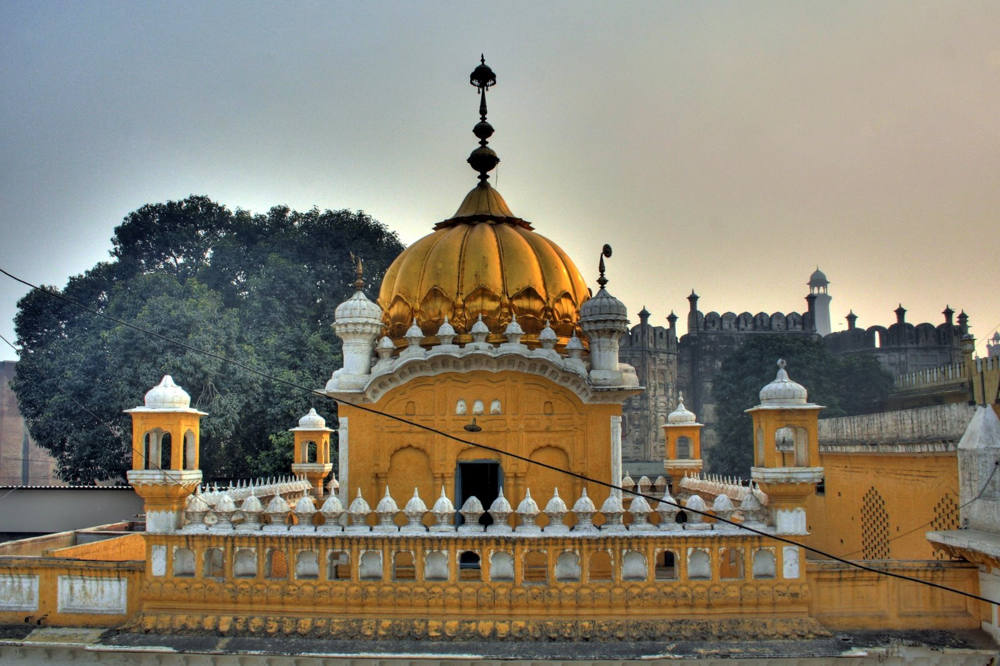

<div class="portfolio-single-load clearfix">
    <div class="custom-full-width-box">
        <div class="custom-container">
            <div class="custom-row align-items-center">
                <div class="custom-image-column">
                    
                </div>
                <div class="custom-text-column">
                    <h2 class="custom-heading">Gurdwara Dera Sahib, Lahore</h2>
                    <p class="custom-paragraph">
                        Gurdwara Dera Sahib, situated in Lahore, Pakistan, holds deep historical significance as it marks the site where Guru Arjan Dev Ji, the fifth Sikh Guru, attained martyrdom in 1606. The gurdwara houses a sacred relic, a hand-written copy of Guru Granth Sahib, believed to have been compiled by Guru Arjan Dev Ji himself. This revered site attracts Sikh pilgrims from around the world, especially during the martyrdom anniversary observed in May each year.
                    </p>
                </div>
            </div>
        </div>
    </div><!-- .custom-full-width-box end -->

</div><!-- end single-project -->
